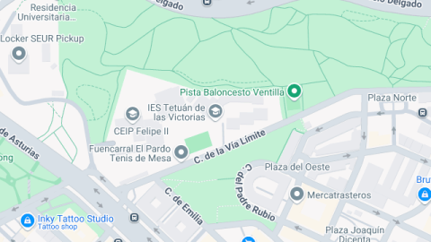
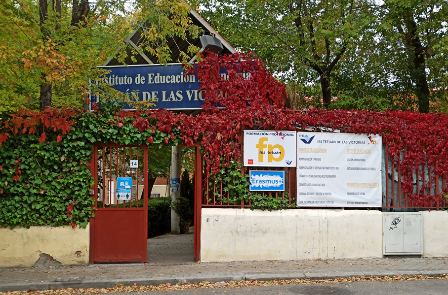
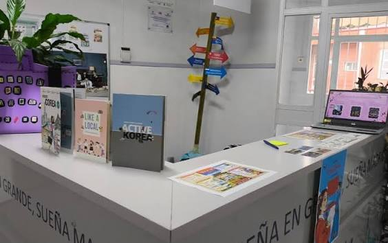
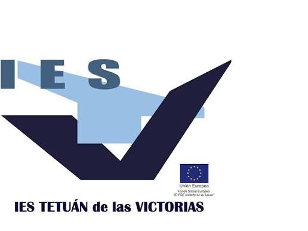
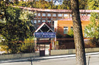

Ubicación
El IES Tetuán de las Victorias se encuentra en la calle de la Vía Límite, en el distrito de Tetuán, en Madrid.

El IES Tetuán de las Victorias es un centro educativo situado en Madrid. En él, los estudiantes pueden formarse y adquirir conocimientos que les pueden ayudar a continuar sus estudios y prepararse para su futuro profesional.

El IES Tetuán de las Victorias se encuentra en la calle de la Vía Límite, en el distrito de Tetuán, en Madrid.

Dispone de aulas para las clases destinadas al aprendizaje y al desarrollo de las actividades educativas y espacios de trabajo donde los alumnos pueden desarrollar habilidades.

Cuenta con secretaría para realizar gestiones, biblioteca, cafetería y bolsa de empleo. Además, participa en programas como Erasmus.

El instituto está situado cerca de Plaza de Castilla. Se encuentra en una zona con actividad empresarial y ayuda a los estudiantes acercándoles a oportunidades profesionales.
